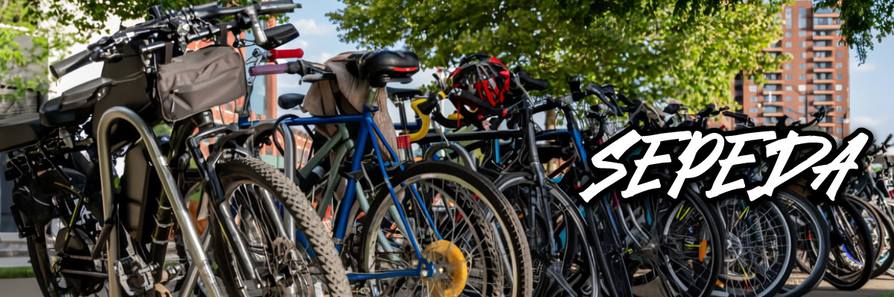
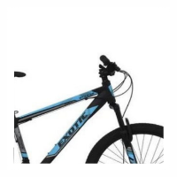
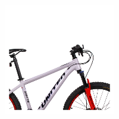
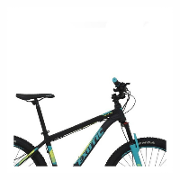
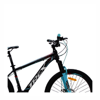
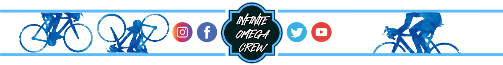

|
 |
||||
|  | |||||
SEPEDA
|  | Exotic ET-263526 inchi dirancang menggunakan frame HiTen Steel yang kuat. Sepeda ini menggunakan fork dengan suspensi yang cukup baik. Dengan menggunakan Shifter Shimano dan Rear Derailleur Shimano Tourney TZ-50 7 Speed, sepeda ini sudah cukup mampu ketika digunakan untuk menanjak. |
 | United Stavros26 Inchi memiliki rangka material alloy yang ringan dan tahan terhadap karat. Sepeda ini menggunakan sistem percepatan 24 speed. Sepeda entry level ini cocok digunakan pada medan datar sedikit bergelombang dan pada aktivitas harian. Sepeda ini bisa digunakan untuk bersekolah maupun bike to work. |
|  | Exotic ET-2612 AH26 Inchi cukup menarik untuk dipertimbangkan sebagai sepeda harian jarak menengah. Sepeda ini dilengkapi dengan sistem percepatan 3 x 9 speed yang cocok digunakan pada medan datar maupun menanjak. |
 | Trex XT-78926 Inchi menggunakan frame dengan material steel yang cukup tebal. Sepeda ini juga memiliki groupset yang cukup baik agar nyaman digunakan remaja dan dewasa. Sepeda ini cocok digunakan pada medan datar sedikit bergelombang baik untuk bersekolah maupun berolahraga di pagi atau sore hari. |
